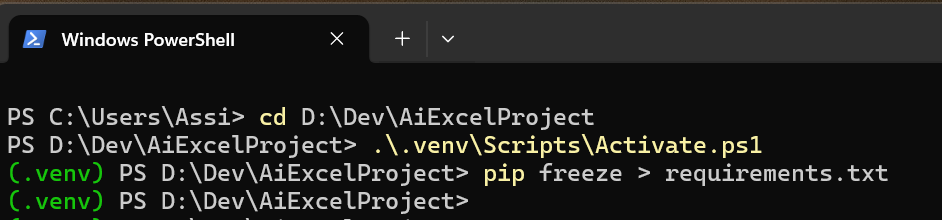

Workstation Packages
- Workstation basic packages
There are some basic packages that were already installed on the workstation from the previous project (if there is).
Look at "AI Developer Guide - Workstation" page at "Development Environment" section.
The below are the specific needed packages (but maybe more - look at the above:)- DevDrive (and a new project inside it: "D:\Dev\AccPhy_Project")
- Python
- VSCode
- Git (and create a new GitHub project)
- Ollama
Python Virtual Environment
Note that we build a new virtual environment for this project (and install the Python packages there).
-
s
- Create Virtual Environment
- Inside VSCode, with your project open, open "View -> Terminal" (it will open at your project location)
- Type:
python -m venv .venv
(.venv folder is created inside the project folder) - Type:
Set-ExecutionPolicy -ExecutionPolicy RemoteSigned -Scope CurrentUser - Type:
.\.venv\Scripts\Activate.ps1
now you can see in the terminal that the line starts with green (.venv)
Python Packages
- Install Python packages
Open Terminal inside VSCode (with the green .venv).
- Type:
pip install ollama - Type:
pip install numpy - Type:
pip install mujoco - Type:
pip install opencv-python - Type:
pip install ultralytics
pip install customtkinter
pip install matplotlib
pip install xlwings (temporary)
- Open Terminal in the location of your project,
make sure you are in green (.venv) or activate it,
then type:pip freeze > requirements.txt
do it every time you add a new package to your project (will be helpful on moving to other computers).
- VSCode looks for the packages in the usual place and mark them as problems.
Search (Ctrl+Shift+P) for "Python: Select Interpreter",
choose the .venv one.
- Type: